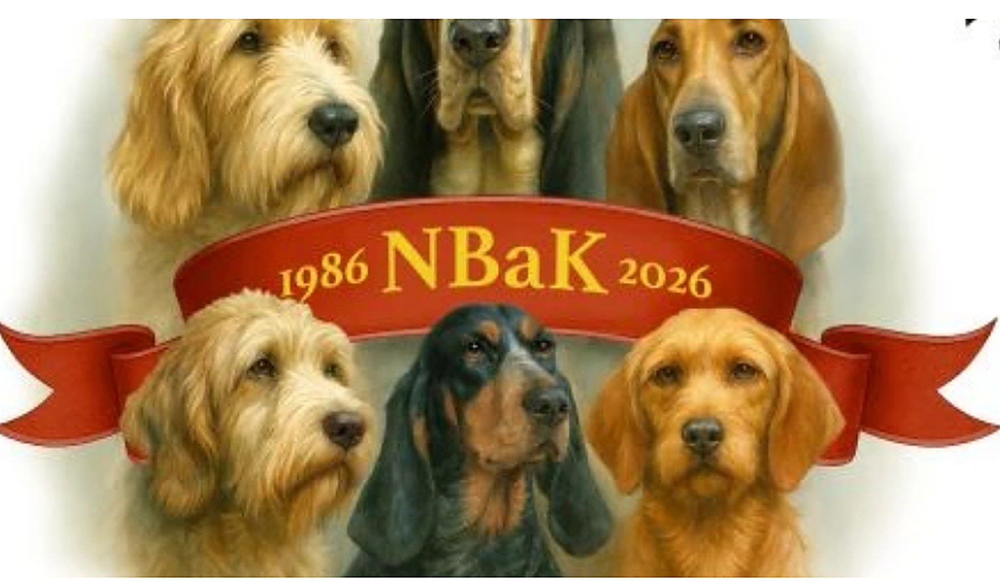

Grasrotandelen i bunnen av siden?
I dag ligger Grasrotandelen midt på forsiden. Forslaget er å flytte den til bunnen av hver side, der den er synlig overalt uten å ta plass fra nyheter og kalender.
Dette er listen over sidene den nye nettsiden skal ha, og hvordan menyen blir bygd opp. Når styret har godkjent den, starter designet. Klikk deg rundt: alt på denne siden kan prøves.

Slik bruker du denne siden
Åpne menypunktene slik et medlem vil gjøre. Finner du det du leter etter der du forventer det?
Hver side i kartet viser hva den skal inneholde, og hvilke av dagens sider som slås sammen i den. Skriv en merknad der hvis noe bør endres.
Nederst samles merknadene deres i én e-post. Godkjenner dere uten merknader, er det like enkelt.
Hovedmenyen
I dag har menyen fire nivåer, og mange av sidene nederst er tomme. Den nye menyen har to nivåer. Klikk på et menypunkt for å se hva som ligger under.
Velger du en side i menyen, åpnes beskrivelsen av den. Alt her er et forslag. Rekkefølge og navn kan endres.
Hele sidekartet
Tallet til høyre viser hvor mange av dagens sider som er samlet i den nye. Klikk på en side for å se innholdet og skrive en merknad.
Rasesidene
I dag har hver rase egne undersider for RAS, rasestandard, helse og pelsstell. Mange av dem har bare en overskrift. Nå samles alt på én side per rase, med snarveier øverst rett til hver del.
Det gjør også at alle seks rasene ser like ut i menyen, selv om bare tre av dem har egen pelsstell-del i dag. Velg en rase for å se oppsettet.
Ingen lenker brytes
Alle 94 adressene på dagens nettside sender automatisk videre til riktig sted på den nye. Bokmerker, lenker fra NKK og treff i Google fortsetter å virke.
Skriv en del av adressen eller sidenavnet, for eksempel spor, valper eller lover.
Ingen treff. Prøv et kortere ord.
Tre spørsmål til styret
Svarene tas med i e-posten nederst. Er dere usikre, la det stå åpent, så tar vi det i neste runde.
I dag ligger Grasrotandelen midt på forsiden. Forslaget er å flytte den til bunnen av hver side, der den er synlig overalt uten å ta plass fra nyheter og kalender.
Dagens forside sier ingen steder hva klubben er. Forslaget er to eller tre setninger om klubben, med lenke videre til «Om klubben», for nye besøkende og valpekjøpere.
Navnene i menyen bør være de ordene medlemmene selv bruker. Er det for eksempel «Aktiviteter» eller «Prøver og utstilling» dere sier i klubben?
Sidekartet setter av plass til medlemsområde, nettbutikk og lister over oppdrettere og valper med filter. Selve funksjonene er ikke med i fastprisen (avtalen § 6), men kan bestilles senere uten å endre menyen. Fram til da viser sidene innholdet slik det er i dag.
Godkjenning
Ingen merknader ennå. Sender dere nå, godkjenner dere sidekartet slik det står.